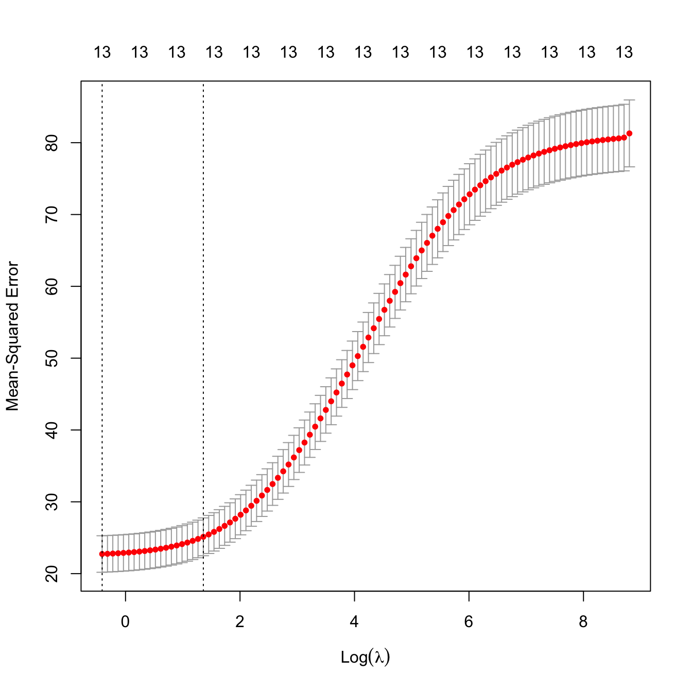
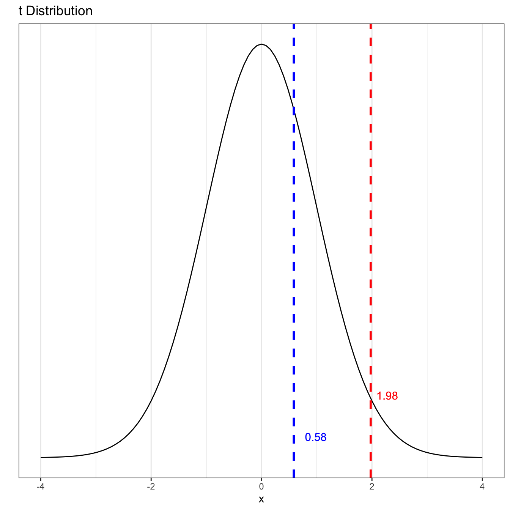
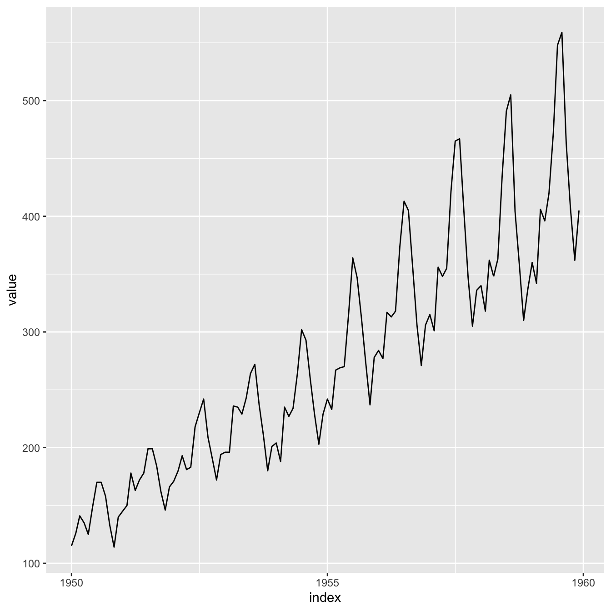
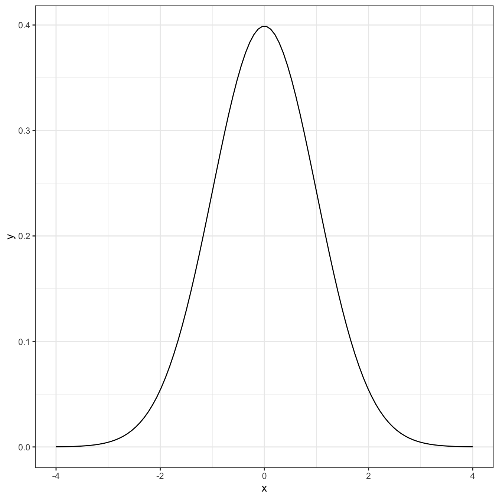
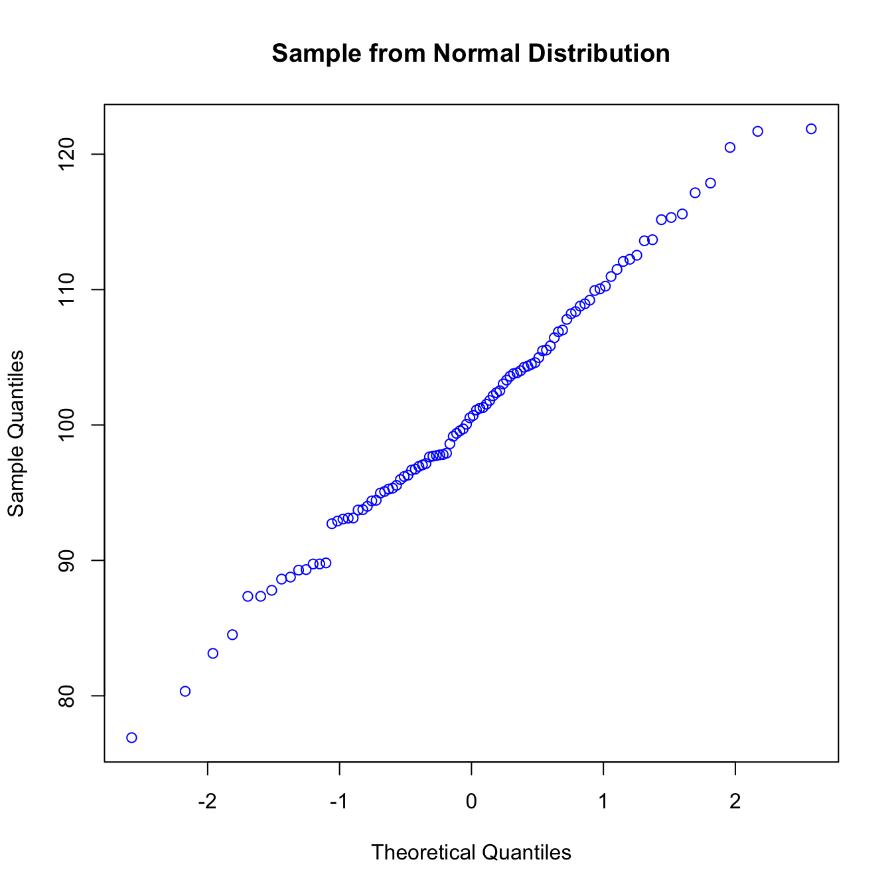
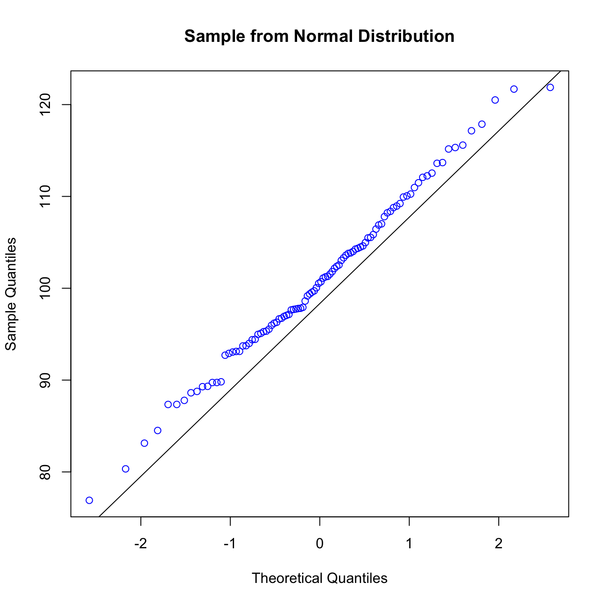
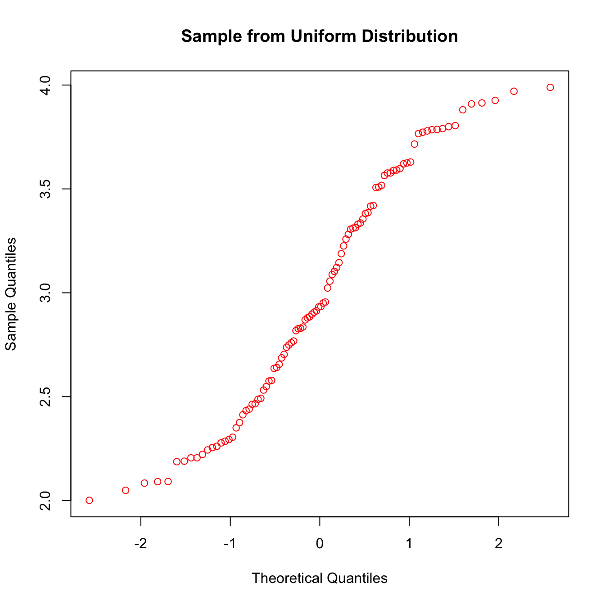

2022년 3월
TIL20220317
페널티 회귀분석 - 2
## 'data.frame': 506 obs. of 14 variables:
## $ crim : num 0.00632 0.02731 0.02729 0.03237 0.06905 ...
## $ zn : num 18 0 0 0 0 0 12.5 12.5 12.5 12.5 ...
## $ indus : num 2.31 7.07 7.07 2.18 2.18 2.18 7.87 7.87 7.87 7.87 ...
## $ chas : int 0 0 0 0 0 0 0 0 0 0 ...
## $ nox : num 0.538 0.469 0.469 0.458 0.458 0.458 0.524 0.524 0.524 0.524 ...
## $ rm : num 6.58 6.42 7.18 7 7.15 ...
## $ age : num 65.2 78.9 61.1 45.8 54.2 58.7 66.6 96.1 100 85.9 ...
## $ dis : num 4.09 4.97 4.97 6.06 6.06 ...
## $ rad : int 1 2 2 3 3 3 5 5 5 5 ...
## $ tax : num 296 242 242 222 222 222 311 311 311 311 ...
## $ ptratio: num 15.3 17.8 17.8 18.7 18.7 18.7 15.2 15.2 15.2 15.2 ...
## $ black : num 397 397 393 395 397 ...
## $ lstat : num 4.98 9.14 4.03 2.94 5.33 ...
## $ medv : num 24 21.6 34.7 33.4 36.2 28.7 22.9 27.1 16.5 18.9 ...set.seed(123)
train.index <- createDataPartition(y = Boston$medv, p = 0.7, list = F)
Boston.train <- Boston[train.index, ]
Boston.test <- Boston[-train.index, ]
Boston.test.x <- model.matrix(medv ~ ., Boston.test)[, -1]
Boston.test.y <- Boston.test$medv
Boston.split <- rbind(Train.Data = nrow(Boston.train), Test.Data = nrow(Boston.test))
colnames(Boston.split) <- c("Number"); Boston.split## Number
## Train.Data 356
## Test.Data 150glmnet 패키지 내 glmnet() 함수를 통해 페널티 회귀분석을 수행할 수 있다. glmnet() 함수는 인자로 결과변수 y는 벡터로 예측변수 x는 행렬 형태로 제공해야 한다. 추가로 연속형 변수만 처리 가능하므로 범주형 변수는 사전에 더미변수로 변환해야 한다.
- family = 결과변수의 확률분포, gaussian, binomial 등
- alpha = 0(Ridge), 1(Lasso), 0~1(ElasticNet)
- lambda = 패널티 크기 조절, 예측오차를 최소화 하는 람다 설정, 교차검정을 통해 설정
##
## The downloaded binary packages are in
## /var/folders/24/8k48jl6d249_n_qfxwsl6xvm0000gn/T//Rtmpp6nXbK/downloaded_packages## crim zn indus chas nox rm age dis rad tax ptratio black lstat
## 1 0.00632 18.0 2.31 0 0.538 6.575 65.2 4.0900 1 296 15.3 396.90 4.98
## 4 0.03237 0.0 2.18 0 0.458 6.998 45.8 6.0622 3 222 18.7 394.63 2.94
## 10 0.17004 12.5 7.87 0 0.524 6.004 85.9 6.5921 5 311 15.2 386.71 17.10
## 12 0.11747 12.5 7.87 0 0.524 6.009 82.9 6.2267 5 311 15.2 396.90 13.27
## 13 0.09378 12.5 7.87 0 0.524 5.889 39.0 5.4509 5 311 15.2 390.50 15.71
## 16 0.62739 0.0 8.14 0 0.538 5.834 56.5 4.4986 4 307 21.0 395.62 8.47Lasso Regression
set.seed(123)
Boston.cv <- cv.glmnet(x = x, y = y, family = "gaussian", alpha = 1) # Lasso
plot(Boston.cv)
왼쪽의 점선은 예측오차를 최소화하는, 즉 예측 정확도를 가장 크게하는 로그 람다값을 나타낸다. Lasso 회귀분석에서는 영향력이 작은 예측변수의 회귀계수를 0으로 만들어 제거할 수 있다. 우측 상단의 예측변수 개수에서 확인이 가능하다.
## lambda.min lambda.min.log
## [1,] 0.01189058 -4.432009예측 정확도와 모델 간명도를 고려하여 최소 예측 오차의 1개 표준편차 이내에 있으면서 예측변수의 개수를 최소화하는 람다를 제공한다.
## lambda.1se lambda.1se.log
## [1,] 0.3716657 -0.9897604cbind(lambda.min = coef(Boston.cv, Boston.cv$lambda.min), lambda.1se = coef(Boston.cv, Boston.cv$lambda.1se))## 14 x 2 sparse Matrix of class "dgCMatrix"
## s1 s1
## (Intercept) 32.720731705 16.0297569500
## crim -0.087271032 -0.0139981876
## zn 0.027462832 .
## indus -0.045858550 -0.0166198270
## chas 2.904607308 2.0413930420
## nox -15.675976627 -2.5456625823
## rm 3.997011835 4.3113894194
## age . .
## dis -1.236733449 -0.2334310319
## rad 0.255230956 .
## tax -0.009918317 -0.0007771602
## ptratio -0.920530277 -0.7681696792
## black 0.008606410 0.0061710231
## lstat -0.481377769 -0.4700816156lambda.min은 1개의, lambda.1se는 3개의 예측변수가 제거되었다.
Boston.gnet1 <- glmnet(x = x, y = y, family = "gaussian",
alpha = 1, # Lasso
lambda = Boston.cv$lambda.min)
Boston.pred1 <- predict(Boston.gnet1, newx = Boston.test.x)
postResample(pred = Boston.pred1, obs = Boston.test.y)## RMSE Rsquared MAE
## 5.1150340 0.7197637 3.3091787Boston.gnet2 <- glmnet(x = x, y = y, family = "gaussian",
alpha = 1, # Lasso
lambda = Boston.cv$lambda.1se)
Boston.pred2 <- predict(Boston.gnet2, newx = Boston.test.x)
postResample(pred = Boston.pred2, obs = Boston.test.y)## RMSE Rsquared MAE
## 5.5656605 0.6795993 3.6151777ElasticNet Regression
ElasticNet읜 L2-norm, L1-norm 페널티항을 설정해야 하므로 최적의 alpha값을 산출해야 한다. caret 패키지 내 train() 함수를 이용한다.
set.seed(123)
Boston.cv <- train(form = medv ~ ., data = Boston.train, method = "glmnet",
trControl = trainControl(method = "cv",
number = 10),
tuneLength = 10)
Boston.cv$bestTune## alpha lambda
## 6 0.1 0.2020812Boston.gnet <- glmnet(x = x, y = y, family = "gaussian",
alpha = Boston.cv$bestTune$alpha,
lambda = Boston.cv$bestTune$lambda)
coef(Boston.gnet)## 14 x 1 sparse Matrix of class "dgCMatrix"
## s0
## (Intercept) 29.766401348
## crim -0.078819914
## zn 0.021807176
## indus -0.064680920
## chas 2.966225220
## nox -13.617871871
## rm 4.056442437
## age .
## dis -1.097715391
## rad 0.194940136
## tax -0.007343684
## ptratio -0.891291598
## black 0.008443963
## lstat -0.466614849Boston.pred <- predict(Boston.gnet, newx = Boston.test.x)
postResample(pred = Boston.pred, obs = Boston.test.y)## RMSE Rsquared MAE
## 5.1766444 0.7148912 3.3115941모델별 비교
lambda <- 10^seq(-1, 5, length = 100)
# ridge
set.seed(123)
ridge <- train(form = medv ~ ., data = Boston.train, method = "glmnet",
trControl = trainControl(method = "cv",
number = 10),
tuneGrid = expand.grid(alpha = 0, lambda = lambda))
coef(ridge$finalModel, ridge$bestTune$lambda)## 14 x 1 sparse Matrix of class "dgCMatrix"
## s1
## (Intercept) 26.531756149
## crim -0.074428914
## zn 0.017800440
## indus -0.084013662
## chas 3.079990715
## nox -10.929321371
## rm 4.075749392
## age -0.003350370
## dis -0.950562016
## rad 0.143524673
## tax -0.005528583
## ptratio -0.844792464
## black 0.008418506
## lstat -0.433322899## RMSE Rsquared MAE
## 5.2697535 0.7078302 3.3430299# lasso
set.seed(123)
lasso <- train(form = medv ~ ., data = Boston.train, method = "glmnet",
trControl = trainControl(method = "cv",
number = 10),
tuneGrid = expand.grid(alpha = 1, lambda = lambda))
coef(lasso$finalModel, lasso$bestTune$lambda)## 14 x 1 sparse Matrix of class "dgCMatrix"
## s1
## (Intercept) 27.091673886
## crim -0.057263747
## zn 0.011752233
## indus -0.060580843
## chas 2.817475257
## nox -11.877653738
## rm 4.155604866
## age .
## dis -0.934714973
## rad 0.114348391
## tax -0.004015459
## ptratio -0.877240341
## black 0.007739894
## lstat -0.477162631## RMSE Rsquared MAE
## 5.245637 0.708739 3.362308# lasso
set.seed(123)
elastic <- train(form = medv ~ ., data = Boston.train, method = "glmnet",
trControl = trainControl(method = "cv",
number = 10),
tuneLength = 10)
coef(elastic$finalModel, elastic$bestTune$lambda)## 14 x 1 sparse Matrix of class "dgCMatrix"
## s1
## (Intercept) 29.765523097
## crim -0.078486897
## zn 0.021723671
## indus -0.064825528
## chas 2.965478459
## nox -13.585240410
## rm 4.054072843
## age .
## dis -1.097151673
## rad 0.194485494
## tax -0.007329651
## ptratio -0.891156341
## black 0.008442569
## lstat -0.467123628elastic.pred <- predict(elastic, Boston.test)
postResample(pred = elastic.pred, obs = Boston.test.y)## RMSE Rsquared MAE
## 5.1769223 0.7148754 3.3120692##
## Call:
## summary.resamples(object = resamples(models))
##
## Models: ridge, lasso, elastic
## Number of resamples: 10
##
## MAE
## Min. 1st Qu. Median Mean 3rd Qu. Max. NA's
## ridge 2.314983 3.095864 3.358949 3.350092 3.553519 4.758853 0
## lasso 2.334122 3.113956 3.355747 3.384424 3.536837 4.889416 0
## elastic 2.370271 3.091582 3.351099 3.369054 3.544919 4.741635 0
##
## RMSE
## Min. 1st Qu. Median Mean 3rd Qu. Max. NA's
## ridge 3.217597 4.220445 4.527056 4.702958 5.047501 6.966902 0
## lasso 3.259155 4.242220 4.489430 4.744627 5.168922 7.113506 0
## elastic 3.323486 4.222079 4.511393 4.699214 5.056862 6.952270 0
##
## Rsquared
## Min. 1st Qu. Median Mean 3rd Qu. Max. NA's
## ridge 0.5685060 0.7102964 0.7569726 0.7432102 0.7896808 0.8415753 0
## lasso 0.5567794 0.6909231 0.7576300 0.7387044 0.7934118 0.8391494 0
## elastic 0.5743693 0.7076979 0.7608565 0.7432037 0.7831245 0.8450374 0세 모델이 RMSE 관점에서 비슷한 성능을 보이는 것 같다. 통계적으로 유의한 차이가 있는지 검정해 본다.
##
## Call:
## summary.diff.resamples(object = diff(resamples(models), metric = "RMSE"))
##
## p-value adjustment: bonferroni
## Upper diagonal: estimates of the difference
## Lower diagonal: p-value for H0: difference = 0
##
## RMSE
## ridge lasso elastic
## ridge -0.041669 0.003744
## lasso 0.7838 0.045413
## elastic 1.0000 0.6350행렬의 대각선 위쪽은 모델간 차이, 아래쪽은 유의확률을 나타낸다. 세 모델 간 통계적 유의한 차이는 없는 것으로 확인된다. 따라서 간명도 관점에서 예측변수의 개수가 적은 모델을 선택하는 것이 바람직하다.
TIL20220316
페널티 회귀분석 - 1
페널티 회귀분석(penalized regression analysis)1
- 릿지 (Ridge)
회귀계수를 0에 가깝게 만듬(모든 변수 사용), 독립변수의 회귀계수가 비슷한 경우 우수 - 라소 (Lasso)
설명력에 기여하지 못하는 독립변수의 회귀계수를 0으로 만듬(간명한 모델), 독립변수의 회귀변수간 차이가 클 때 우수 - 일래스틱넷 (ElasticNet), 릿지 + 라소
지나치게많은 독립변수를 갖는 모델에 페널티를 부과하는 방식으로 보다 간명한 회귀모델을 생성할 수 있다. 모델의 성능에 크게 기여하지 못하는 변수의 영향력을 축소(Lasso)하거나 모델에서 제거(Ridge)한다. 최소자승법에 의한 잔차(=관측값-예측값)의 제곱합과 페널티항의 합이 최소가 되도록 회귀계수를 추정한다.
## 'data.frame': 506 obs. of 14 variables:
## $ crim : num 0.00632 0.02731 0.02729 0.03237 0.06905 ...
## $ zn : num 18 0 0 0 0 0 12.5 12.5 12.5 12.5 ...
## $ indus : num 2.31 7.07 7.07 2.18 2.18 2.18 7.87 7.87 7.87 7.87 ...
## $ chas : int 0 0 0 0 0 0 0 0 0 0 ...
## $ nox : num 0.538 0.469 0.469 0.458 0.458 0.458 0.524 0.524 0.524 0.524 ...
## $ rm : num 6.58 6.42 7.18 7 7.15 ...
## $ age : num 65.2 78.9 61.1 45.8 54.2 58.7 66.6 96.1 100 85.9 ...
## $ dis : num 4.09 4.97 4.97 6.06 6.06 ...
## $ rad : int 1 2 2 3 3 3 5 5 5 5 ...
## $ tax : num 296 242 242 222 222 222 311 311 311 311 ...
## $ ptratio: num 15.3 17.8 17.8 18.7 18.7 18.7 15.2 15.2 15.2 15.2 ...
## $ black : num 397 397 393 395 397 ...
## $ lstat : num 4.98 9.14 4.03 2.94 5.33 ...
## $ medv : num 24 21.6 34.7 33.4 36.2 28.7 22.9 27.1 16.5 18.9 ...glmnet 패키지 내 glmnet() 함수를 통해 페널티 회귀분석을 수행할 수 있다. glmnet() 함수는 인자로 결과변수 y는 벡터로 예측변수 x는 행렬 형태로 제공해야 한다. 추가로 연속형 변수만 처리 가능하므로 범주형 변수는 사전에 더미변수로 변환해야 한다.
- family = 결과변수의 확률분포, gaussian, binomial 등
- alpha = 0(Ridge), 1(Lasso), 0~1(ElasticNet)
- lambda = 패널티 크기 조절, 예측오차를 최소화 하는 람다 설정, 교차검정을 통해 설정
Ridge Regression
# 최적의 람다 계산
set.seed(123)
Boston.cv <- cv.glmnet(x = x, y = y, family = "gaussian", alpha = 0) # Ridge
plot(Boston.cv)왼쪽의 점선은 최적 람다의 로그 값, 상단의 숫자는 예측변수의 개수, Ridge 회귀분석은 회귀계수를 0으로 만들지 않기 때문에 예측변수 개수가 줄어들지 않는다.
## List of 12
## $ lambda : num [1:100] 6648 6057 5519 5029 4582 ...
## $ cvm : num [1:100] 81.3 80.7 80.6 80.5 80.5 ...
## $ cvsd : num [1:100] 4.66 4.63 4.61 4.61 4.6 ...
## $ cvup : num [1:100] 85.9 85.3 85.2 85.1 85.1 ...
## $ cvlo : num [1:100] 76.6 76.1 76 75.9 75.8 ...
## $ nzero : Named int [1:100] 13 13 13 13 13 13 13 13 13 13 ...
## ..- attr(*, "names")= chr [1:100] "s0" "s1" "s2" "s3" ...
## $ call : language cv.glmnet(x = x, y = y, family = "gaussian", alpha = 0)
## $ name : Named chr "Mean-Squared Error"
## ..- attr(*, "names")= chr "mse"
## $ glmnet.fit:List of 12
## ..$ a0 : Named num [1:100] 22.4 22.5 22.5 22.5 22.5 ...
## .. ..- attr(*, "names")= chr [1:100] "s0" "s1" "s2" "s3" ...
## ..$ beta :Formal class 'dgCMatrix' [package "Matrix"] with 6 slots
## .. .. ..@ i : int [1:1300] 0 1 2 3 4 5 6 7 8 9 ...
## .. .. ..@ p : int [1:101] 0 13 26 39 52 65 78 91 104 117 ...
## .. .. ..@ Dim : int [1:2] 13 100
## .. .. ..@ Dimnames:List of 2
## .. .. .. ..$ : chr [1:13] "crim" "zn" "indus" "chas" ...
## .. .. .. ..$ : chr [1:100] "s0" "s1" "s2" "s3" ...
## .. .. ..@ x : num [1:1300] -4.24e-37 1.27e-37 -6.75e-37 6.90e-36 -3.46e-35 ...
## .. .. ..@ factors : list()
## ..$ df : int [1:100] 13 13 13 13 13 13 13 13 13 13 ...
## ..$ dim : int [1:2] 13 100
## ..$ lambda : num [1:100] 6648 6057 5519 5029 4582 ...
## ..$ dev.ratio: num [1:100] 5.72e-36 8.32e-03 9.12e-03 1.00e-02 1.10e-02 ...
## ..$ nulldev : num 28877
## ..$ npasses : int 452
## ..$ jerr : int 0
## ..$ offset : logi FALSE
## ..$ call : language glmnet(x = x, y = y, family = "gaussian", alpha = 0)
## ..$ nobs : int 356
## ..- attr(*, "class")= chr [1:2] "elnet" "glmnet"
## $ lambda.min: num 0.665
## $ lambda.1se: num 3.89
## $ index : int [1:2, 1] 100 81
## ..- attr(*, "dimnames")=List of 2
## .. ..$ : chr [1:2] "min" "1se"
## .. ..$ : chr "Lambda"
## - attr(*, "class")= chr "cv.glmnet"## lambda.min lambda.min.log
## [1,] 0.6647797 -0.4082995Boston.gnet <- glmnet(x = x, y = y, family = "gaussian",
alpha = 0, # Ridge
lambda = Boston.cv$lambda.min)
coef(Boston.gnet)## 14 x 1 sparse Matrix of class "dgCMatrix"
## s0
## (Intercept) 26.562458173
## crim -0.074637662
## zn 0.017675831
## indus -0.084095173
## chas 3.084971492
## nox -11.016754020
## rm 4.080060454
## age -0.003541674
## dis -0.951812086
## rad 0.143586748
## tax -0.005498664
## ptratio -0.845505137
## black 0.008415669
## lstat -0.432346168## s0
## 2 25.28493
## 3 30.64018
## 5 28.96135
## 6 26.05142
## 7 23.45445
## 8 20.73295## RMSE Rsquared MAE
## 5.270168 0.707766 3.343058RMSE와 MAE는 오차 지표로 값이 작을수록, Rsquared는 모델의 설명력 지표로 값이 클수록 우수한 모델이다.
TIL20220315
caret을 이용한 기계학습 절차
- 데이터 전처리
- 데이터 분할
- 학습
- 성능평가
- 하이퍼 파라메터 튜닝
## tibble [344 × 8] (S3: tbl_df/tbl/data.frame)
## $ species : Factor w/ 3 levels "Adelie","Chinstrap",..: 1 1 1 1 1 1 1 1 1 1 ...
## $ island : Factor w/ 3 levels "Biscoe","Dream",..: 3 3 3 3 3 3 3 3 3 3 ...
## $ bill_length_mm : num [1:344] 39.1 39.5 40.3 NA 36.7 39.3 38.9 39.2 34.1 42 ...
## $ bill_depth_mm : num [1:344] 18.7 17.4 18 NA 19.3 20.6 17.8 19.6 18.1 20.2 ...
## $ flipper_length_mm: int [1:344] 181 186 195 NA 193 190 181 195 193 190 ...
## $ body_mass_g : int [1:344] 3750 3800 3250 NA 3450 3650 3625 4675 3475 4250 ...
## $ sex : Factor w/ 2 levels "female","male": 2 1 1 NA 1 2 1 2 NA NA ...
## $ year : int [1:344] 2007 2007 2007 2007 2007 2007 2007 2007 2007 2007 ...## species island bill_length_mm bill_depth_mm
## Adelie :152 Biscoe :168 Min. :32.10 Min. :13.10
## Chinstrap: 68 Dream :124 1st Qu.:39.23 1st Qu.:15.60
## Gentoo :124 Torgersen: 52 Median :44.45 Median :17.30
## Mean :43.92 Mean :17.15
## 3rd Qu.:48.50 3rd Qu.:18.70
## Max. :59.60 Max. :21.50
## NA's :2 NA's :2
## flipper_length_mm body_mass_g sex year
## Min. :172.0 Min. :2700 female:165 Min. :2007
## 1st Qu.:190.0 1st Qu.:3550 male :168 1st Qu.:2007
## Median :197.0 Median :4050 NA's : 11 Median :2008
## Mean :200.9 Mean :4202 Mean :2008
## 3rd Qu.:213.0 3rd Qu.:4750 3rd Qu.:2009
## Max. :231.0 Max. :6300 Max. :2009
## NA's :2 NA's :2# 1. 데이터 전처리
library(mice)
penguins.preprocessing <- mice(penguins, m=1, print=F)
# 결측치 처리
data <- complete(penguins.preprocessing)
# 수치형 변수 정규화
data[, c(3:6)] <- scale(data[, c(3:6)])
# 년도 범주로 변환
data$year <- as.factor(data$year)## species island bill_length_mm bill_depth_mm
## Adelie :152 Biscoe :168 Min. :-2.1655 Min. :-2.04700
## Chinstrap: 68 Dream :124 1st Qu.:-0.8652 1st Qu.:-0.79498
## Gentoo :124 Torgersen: 52 Median : 0.0962 Median : 0.07764
## Mean : 0.0000 Mean : 0.00000
## 3rd Qu.: 0.8379 3rd Qu.: 0.78586
## Max. : 2.8707 Max. : 2.20229
## flipper_length_mm body_mass_g sex year
## Min. :-2.0578 Min. :-1.8752 female:172 2007:110
## 1st Qu.:-0.7762 1st Qu.:-0.8156 male :172 2008:114
## Median :-0.2778 Median :-0.1922 2009:120
## Mean : 0.0000 Mean : 0.0000
## 3rd Qu.: 0.8614 3rd Qu.: 0.6882
## Max. : 2.1431 Max. : 2.6126# 2. 데이터 분할
train.index <- createDataPartition(data$sex, p=0.7, list=F)
data.train <- data[train.index, ]
data.test <- data[-train.index, ]
addmargins(rbind(
TrainSet = table(data.train$sex),
TestSet = table(data.test$sex)
),2)## female male Sum
## TrainSet 121 121 242
## TestSet 51 51 102# 3. 학습
fitControl <- trainControl(method = "repeatedcv", repeats = 5)
model.rf <- train(sex ~ ., data=data.train, method = "rf", trControl = fitControl); model.rf## Error: Required packages are missing: randomForest## Error in eval(expr, envir, enclos): object 'model.rf' not found## Error in predict(model.rf, newdata = data.test): object 'model.rf' not found## Error in confusionMatrix(model.rf.pred, data.test$sex): object 'model.rf.pred' not found## Error in eval(expr, envir, enclos): object 'model.rf.cm' not found# 5. 하이퍼 파라메터 튜닝
## 5-1. custom search grid
customGrid <- expand.grid(mtry = 1:(dim(data.train)[2]-1))
model.rf.tuned <- train(sex ~ ., data=data.train, method = "rf",
trControl = fitControl,
tuneGrid = customGrid); model.rf.tuned## Error: Required packages are missing: randomForest## Error in eval(expr, envir, enclos): object 'model.rf.tuned' not found## Error in predict(model.rf.tuned, newdata = data.test): object 'model.rf.tuned' not found## Error in confusionMatrix(model.rf.tuned.pred, data.test$sex): object 'model.rf.tuned.pred' not found## Error in eval(expr, envir, enclos): object 'model.rf.tuned.cm' not found# 5-2. Random Search Grid
fitControl.random <- trainControl(method = "repeatedcv", repeats = 5, search = "random")
model.rf.tuned2 <- train(sex ~ ., data=data.train, method = "rf",
trControl = fitControl.random,
tuneLength = 10); model.rf.tuned2## Error: Required packages are missing: randomForest## Error in eval(expr, envir, enclos): object 'model.rf.tuned2' not found## Error in predict(model.rf.tuned2, newdata = data.test): object 'model.rf.tuned2' not found## Error in confusionMatrix(model.rf.tuned2.pred, data.test$sex): object 'model.rf.tuned2.pred' not found## Error in eval(expr, envir, enclos): object 'model.rf.tuned2.cm' not foundTIL20220314
데이터 분할, 이건 내일 정리하자. 양이 많네.
일반적인 데이터 분할
trainIndex <- createDataPartition(penguins$species, p=.7, list=F)
pTrain <- penguins[trainIndex, ]
pTest <- penguins[-trainIndex, ]
addmargins(addmargins(rbind(
pTrain = table(pTrain$species),
pTest = table(pTest$species)
),2),1)## Adelie Chinstrap Gentoo Sum
## pTrain 107 48 87 242
## pTest 45 20 37 102
## Sum 152 68 124 344TIL20220313
시계열 데이터 분할
출처: 시계열 데이터 - 항공여객(Air Passenger) 데이터2
시계열은 일반적인 방법으로 표본상에서 랜덤하게 원소를 추출할 수 없다. 시간 흐름을 고려하여 훈련 데이터와 시험 데이터로 분할해야 한다.
train = 1:18
test = 19:24
par(mar=c(0,0,0,0))
{plot(0,0,xlim=c(0,26),ylim=c(0,2),xaxt="n",yaxt="n",bty="n",xlab="",ylab="",type="n")
arrows(0,0.5,25,0.5,0.05)
points(train, train*0+0.5, pch=19, col="blue")
points(test, test*0+0.5, pch=19, col="red")
text(26,0.5,"시간")
text(10,0.7,"훈련데이터",col="blue")
text(21,0.7,"시험데이터",col="red")}
# Core Tidyverse
library(tidyverse)
library(glue)
library(forcats)
# Time Series
library(timetk)
library(tidyquant)
library(tibbletime)
library(sweep)
# Visualization
library(cowplot)
# Preprocessing
library(recipes)
# Sampling / Accuracy
library(rsample)
library(yardstick)
# Modeling
library(forecast)
data("AirPassengers")
ap_ts <- AirPassengers %>%
tk_tbl() %>%
mutate(index = as_date(index)) %>%
as_tbl_time(index = index) %>%
filter(index >= "1950-01-01", index <= "1959-12-31")
ggplot(ap_ts, aes(x=index, y=value)) +
geom_line()
오늘은 여기까지…
TIL20220312
RStudio Chunk options
R Code Chunks3
Rmarkdown으로 문서 작성 시 꼭 필요한 사용하게 된다. 알아 둘 것.
knitr::opts_chunk$set(# root.dir = '../..', # 프로젝트 폴더 지정
eval = TRUE,
echo = FALSE,
cache = FALSE,
include = TRUE,
tidy = TRUE,
tidy.opts = list(blank=FALSE, width.cutoff=120), # 소스 출력길이 지정
message = FALSE,
warning = FALSE,
engine = "R", # Chunks will always have R code, unless noted
error = TRUE,
fig.path="Figures/", # Set the figure options
fig.align = "center",
fig.width = 7,
fig.height = 7,
fig.keep='all', fig.retina=2)TIL20220311
DWmR 패키지는 github actions로 설치 안되는 걸로…
RStudio에서 rendering 후 업로드 하자.
URL을 통해 직접 패키지 설치
Install an R package directly from a URL for the package source4
TIL20220310
## 'data.frame': 699 obs. of 10 variables:
## $ Cl.thickness : Ord.factor w/ 10 levels "1"<"2"<"3"<"4"<..: 5 5 3 6 4 8 1 2 2 4 ...
## $ Cell.size : Ord.factor w/ 10 levels "1"<"2"<"3"<"4"<..: 1 4 1 8 1 10 1 1 1 2 ...
## $ Cell.shape : Ord.factor w/ 10 levels "1"<"2"<"3"<"4"<..: 1 4 1 8 1 10 1 2 1 1 ...
## $ Marg.adhesion : Ord.factor w/ 10 levels "1"<"2"<"3"<"4"<..: 1 5 1 1 3 8 1 1 1 1 ...
## $ Epith.c.size : Ord.factor w/ 10 levels "1"<"2"<"3"<"4"<..: 2 7 2 3 2 7 2 2 2 2 ...
## $ Bare.nuclei : Factor w/ 10 levels "1","2","3","4",..: 1 10 2 4 1 10 10 1 1 1 ...
## $ Bl.cromatin : Factor w/ 10 levels "1","2","3","4",..: 3 3 3 3 3 9 3 3 1 2 ...
## $ Normal.nucleoli: Factor w/ 10 levels "1","2","3","4",..: 1 2 1 7 1 7 1 1 1 1 ...
## $ Mitoses : Factor w/ 9 levels "1","2","3","4",..: 1 1 1 1 1 1 1 1 5 1 ...
## $ Class : Factor w/ 2 levels "benign","malignant": 1 1 1 1 1 2 1 1 1 1 ...train.index <- createDataPartition(bc$Class, p=0.75, list=F)
bc.train <- bc[train.index, ]; bc.test <- bc[-train.index, ];
rbind(TrainData = table(bc.train$Class), TestData = table(bc.test$Class))# upsampling / downsample / SMOTE
bc.train.up <- upSample(subset(bc.train, select = -Class), bc.train$Class)
bc.train.down <- downSample(subset(bc.train, select = -Class), bc.train$Class)
bc.train.smote <- SMOTE(Class ~ ., bc.train, prec.over = 900, perc.under=150)
rbind(Upsampling = table(bc.train.up$Class),
Downsampling = table(bc.train.down$Class),
SMOTE = table(bc.train.smote$Class))p.dt <- rpart(Class ~ ., bc.train)
p.dt.pred <- predict(p.dt, bc.test, type = "class")
orig.cm <- confusionMatrix(p.dt.pred, bc.test$Class)$overall[1]p.dt <- rpart(Class ~ ., bc.train.up)
p.dt.pred <- predict(p.dt, bc.test, type = "class")
up.cm <- confusionMatrix(p.dt.pred, bc.test$Class)$overall[1]p.dt <- rpart(Class ~ ., bc.train.down)
p.dt.pred <- predict(p.dt, bc.test, type = "class")
down.cm <- confusionMatrix(p.dt.pred, bc.test$Class)$overall[1]p.dt <- rpart(Class ~ ., bc.train.smote)
p.dt.pred <- predict(p.dt, bc.test, type = "class")
smote.cm <- confusionMatrix(p.dt.pred, bc.test$Class)$overall[1]상황에 따라 결과가 다르게 나오지만 대체적으로 SMOTE에서 높은 정확도를 보인다.
SMOTE 데이터 형식 오류
Why do I get ‘Error in T[, col] <- data[, col]’ when I use SMOTE in R?
변수는 facter형이고, tibble 형식을 지원하지 않는다.
TIL20220309
클래스 불균형과 샘플링
분류 분석의 경우 관찰된 표본 범주 비율이 큰 쪽으로 편향되는 경향이 있다. 이를 해결하기 위해 범주의 비율을 조절하여 정제한다.

Downsampling & Upsampling5

SMOTE6
- Upsampling: this method increases the size of the minority class by sampling with replacement so that the classes will have the same size.
- Downsampling: in contrast to the above method, this one decreases the size of the majority class to be the same or closer to the minority class size by just taking out a random sample.
- Hybrid methods : The well known hybrid methods are ROSE (Random oversampling examples), and SMOTE (Synthetic minority oversampling technique), they downsample the majority class, and creat new artificial points in the minority class. For more detail about SMOTE method click here, and for ROSE click here.
from: Methods for dealing with imbalanced data7
TIL20220308
R 에러 수정
> library(dplyr)
Error: package or namespace load failed for ‘dplyr’ in loadNamespace(i, c(lib.loc, .libPaths()), versionCheck = vI[[i]]):
‘rlang’이라고 불리는 패키지가 없습니다
In addition: Warning message:
패키지 ‘dplyr’는 R 버전 3.4.4에서 작성되었습니다 이런 식으로 에러가 발생하면 깔끔하게 R을 재설치 하자. libpath나 패키지 재설치 등의 방법이 언급되지만 안되는 경우가 있다. 한시간 반 소비하고 내린 결론이다.
4.0.3에서 문제가 일어났고 4.1.2로 버전 업해서 문제 해결되었다.
Error:
! Assigned data `all_column_mean[i]` must be compatible with existing data.
i Error occurred for column `flipper_length_mm`.
x Can't convert from <double> to <integer> due to loss of precision.
* Locations: 1.
Backtrace:
1. base::`[<-`(`*tmp*`, is.na(p.mean[, i]), i, value = `<dbl>`)
19. tibble `<fn>`(`<vctrs___>`)p.mean <- as.data.frame(penguins[c(3:6)])와 같이 데이터 형태를 명시적으로 지정해 준다.
TIL20220307
결측치 처리

확인
## species island bill_length_mm bill_depth_mm
## Adelie :152 Biscoe :168 Min. :32.10 Min. :13.10
## Chinstrap: 68 Dream :124 1st Qu.:39.23 1st Qu.:15.60
## Gentoo :124 Torgersen: 52 Median :44.45 Median :17.30
## Mean :43.92 Mean :17.15
## 3rd Qu.:48.50 3rd Qu.:18.70
## Max. :59.60 Max. :21.50
## NA's :2 NA's :2
## flipper_length_mm body_mass_g sex year
## Min. :172.0 Min. :2700 female:165 Min. :2007
## 1st Qu.:190.0 1st Qu.:3550 male :168 1st Qu.:2007
## Median :197.0 Median :4050 NA's : 11 Median :2008
## Mean :200.9 Mean :4202 Mean :2008
## 3rd Qu.:213.0 3rd Qu.:4750 3rd Qu.:2009
## Max. :231.0 Max. :6300 Max. :2009
## NA's :2 NA's :2## species island bill_length_mm bill_depth_mm
## 0 0 2 2
## flipper_length_mm body_mass_g sex year
## 2 2 11 0## [1] 344등등등
제거
## species island bill_length_mm bill_depth_mm
## 0 0 0 0
## flipper_length_mm body_mass_g sex year
## 0 0 0 0## [1] 333penguins.naomit <- penguins[complete.cases(penguins), ]
colSums(is.na(penguins.naomit)); nrow(penguins.naomit)## species island bill_length_mm bill_depth_mm
## 0 0 0 0
## flipper_length_mm body_mass_g sex year
## 0 0 0 0## [1] 333제거 후 11개 행이 감소된 것을 볼 수 있다.
0으로 대체
# 연속형 변수에 대해서만 적용
penguins.0 <- penguins[c(3:6)] %>%
select_if(function(x) any(is.na(x))) %>%
replace(is.na(.), 0)
colSums(is.na(penguins.0))## bill_length_mm bill_depth_mm flipper_length_mm body_mass_g
## 0 0 0 0평균으로 대체
penguins.mean <- penguins[c(3:6)] %>%
select_if(function(x) any(is.na(x))) %>%
mutate(bill_length_mm = ifelse(is.na(bill_length_mm), mean(bill_length_mm, na.rm=T), bill_length_mm),
bill_depth_mm = ifelse(is.na(bill_depth_mm), mean(bill_depth_mm, na.rm=T), bill_depth_mm),
flipper_length_mm = ifelse(is.na(flipper_length_mm), mean(flipper_length_mm, na.rm=T), flipper_length_mm),
body_mass_g = ifelse(is.na(body_mass_g), mean(body_mass_g, na.rm=T), body_mass_g))
colSums(is.na(penguins.mean))## bill_length_mm bill_depth_mm flipper_length_mm body_mass_g
## 0 0 0 0# 0으로 대체한 경우와 평균값으로 대체한 경우의 차이
colMeans(penguins[c(3:6)], na.rm = T); colMeans(penguins.0); colMeans(round(penguins.mean,1));## bill_length_mm bill_depth_mm flipper_length_mm body_mass_g
## 43.92193 17.15117 200.91520 4201.75439## bill_length_mm bill_depth_mm flipper_length_mm body_mass_g
## 43.66657 17.05145 199.74709 4177.32558## bill_length_mm bill_depth_mm flipper_length_mm body_mass_g
## 43.92180 17.15145 200.91512 4201.75465## bill_length_mm bill_depth_mm flipper_length_mm body_mass_g
## 44.45 17.30 197.00 4050.00penguins.median <- penguins[c(3:6)]
for(i in colnames(penguins.median)) {
penguins.median[is.na(penguins.median[,i]), i] <- all_column_median[i]
}
colMeans(round(penguins.median))## bill_length_mm bill_depth_mm flipper_length_mm body_mass_g
## 43.93314 17.15407 200.89244 4200.87209TIL20220306
대응표본 평균검정
독립표본 평균검정은 두 개의 표본이 서로 독립인 모집단으로부터추출되었다는 가정을 전제로 한다. 두 표본의 값이 쌍(pair)을 이루고 있는 경우 쌍을 이룬 값은 서로 독립이 아니며, 이처럼 검정하려고 하는 두 개의 표본이 서로 독립이 아닌 모집단으로부터 추출되었을 대 대응표본 평균검정(paired-samples t test)을 이용하여 두 집단 간의차이 검정을 수행할 수 있다.
| 독립표본 | 대응표본 |
|---|---|
| 무작위로 실험 대상자를선정하여 두 개의 집단으로 나눔 | 무작위로 실험 대상자를 선정 |
| 한 집단에는 앛미식사를 하고 IQ 테스트에 응하도록 하고 다른 집단에는 앛미식사를 거르고 IQ 테스트에참가하도록 함 | 각 실험 대아자를 대상으로 IQ 테스트를 두 차례 실시 |
| 각 실험 대상자에 대해 하나씩의 IQ 테스트 점수를 얻게 됨 | 한번은 아침칫가를 하고 테스트에 응하고 다른 한번은 아침식사를 하지 않은 상태로 테스트에 참가하도록 함 |
| 각 식험 대상자에 대해 두 개의 IQ 테스트 점수를 얻게 됨 |
## 'data.frame': 20 obs. of 3 variables:
## $ extra: num 0.7 -1.6 -0.2 -1.2 -0.1 3.4 3.7 0.8 0 2 ...
## $ group: Factor w/ 2 levels "1","2": 1 1 1 1 1 1 1 1 1 1 ...
## $ ID : Factor w/ 10 levels "1","2","3","4",..: 1 2 3 4 5 6 7 8 9 10 ...##
## Paired t-test
##
## data: extra by group
## t = -4.0621, df = 9, p-value = 0.002833
## alternative hypothesis: true difference in means is not equal to 0
## 95 percent confidence interval:
## -2.4598858 -0.7001142
## sample estimates:
## mean of the differences
## -1.58주어진 표본이 wide format일 경우 벡터를 직접 지정하여 수행한다.
## ID 1 2
## 1 1 0.7 1.9
## 2 2 -1.6 0.8
## 3 3 -0.2 1.1
## 4 4 -1.2 0.1
## 5 5 -0.1 -0.1
## 6 6 3.4 4.4
## 7 7 3.7 5.5
## 8 8 0.8 1.6
## 9 9 0.0 4.6
## 10 10 2.0 3.4##
## Paired t-test
##
## data: sleep.wide$`1` and sleep.wide$`2`
## t = -4.0621, df = 9, p-value = 0.002833
## alternative hypothesis: true difference in means is not equal to 0
## 95 percent confidence interval:
## -2.4598858 -0.7001142
## sample estimates:
## mean of the differences
## -1.58독립표본 비율검정
- 귀무가설: 폐질환자 대비 흡연자의 비율이 병원별로 같다.
- 대립가설: 폐질환자 대비 흡연자의 비율이 병원별로 다르다.
# 4개 병원에 대한 폐질환자 및 흡연자 비율
patients <- c(86, 93, 136, 82) # 폐질환자
smokers <- c(83, 90, 129,70) # 흡연자
smokers/patients # 페질환자 대비 흡연자 비율## [1] 0.9651163 0.9677419 0.9485294 0.8536585##
## 4-sample test for equality of proportions without continuity
## correction
##
## data: smokers out of patients
## X-squared = 12.6, df = 3, p-value = 0.005585
## alternative hypothesis: two.sided
## sample estimates:
## prop 1 prop 2 prop 3 prop 4
## 0.9651163 0.9677419 0.9485294 0.8536585검정 수행 결과 네 병원의 폐질환자 대비 흡연자 수는 값다고 볼 수 없다.
독립표본 평균검정
독립표본 평균검정(two-independent samples t test)는 두 개의 독립표본 데이터를 이용하여 각각 대응되는 두 개의 모집단 평균이 서로 동일한지 검정한다. 두 집단이 서로 차이가 있는지를 검정하고자 할 때 수행한다.
- 귀무가설: 두 집단의 평균에는 차이가 없다(같다).
- 대립가설: 두 집단의 평균에는 차이가 있다(다르다).
예제
고양이의 성별에 따른 몸무게의 차이가 있는지를 검정한다.
- 귀무가설: 고양이 성별에 따른 몸무게 차이는 없다.
- 대립가설: 고양이 성별에 따른 몸무게 차이는 있다.
##
## Welch Two Sample t-test
##
## data: Bwt by Sex
## t = -8.7095, df = 136.84, p-value = 8.831e-15
## alternative hypothesis: true difference in means between group F and group M is not equal to 0
## 95 percent confidence interval:
## -0.6631268 -0.4177242
## sample estimates:
## mean in group F mean in group M
## 2.359574 2.900000## [1] 2.359574## [1] 2.9##
## Welch Two Sample t-test
##
## data: Bwt.f and Bwt.m
## t = -8.7095, df = 136.84, p-value = 8.831e-15
## alternative hypothesis: true difference in means is not equal to 0
## 95 percent confidence interval:
## -0.6631268 -0.4177242
## sample estimates:
## mean of x mean of y
## 2.359574 2.900000일표본 비율검정
prop.test() 함수는 모집단에 대한 표본의 비율에 대한 검정을 수행한다.
예제
프로야구 팀이 30경기 중 18승을 거두었을 때, 승률이 50%가 넘는다고 말할 수 있는가?
- 귀무가설: 승률이 50% 이하다.
- 대립가설: 승률이 50% 이상이다.
##
## 1-sample proportions test with continuity correction
##
## data: 18 out of 30, null probability 0.5
## X-squared = 0.83333, df = 1, p-value = 0.1807
## alternative hypothesis: true p is greater than 0.5
## 95 percent confidence interval:
## 0.4344744 1.0000000
## sample estimates:
## p
## 0.6일표본 평균검정
일표본 평균검정(one-sample t test)는 하나의 표본 데이터를 이용하여 모집단의 평균이 특정 값과 같은지 검정하는 것이다. 표본집단이 특정 모집단과 일치하는지 혹은 그렇지 않은지를 알고 싶을 때 이용한다.
## 'data.frame': 144 obs. of 3 variables:
## $ Sex: Factor w/ 2 levels "F","M": 1 1 1 1 1 1 1 1 1 1 ...
## $ Bwt: num 2 2 2 2.1 2.1 2.1 2.1 2.1 2.1 2.1 ...
## $ Hwt: num 7 7.4 9.5 7.2 7.3 7.6 8.1 8.2 8.3 8.5 ...- 귀무가설: 고양이의 몸무게가 2.6kg이다.
- 대립가설: 고양이의 몸무게가 2.6kg이 아니다.
##
## One Sample t-test
##
## data: cats$Bwt
## t = 3.0565, df = 143, p-value = 0.002673
## alternative hypothesis: true mean is not equal to 2.6
## 95 percent confidence interval:
## 2.643669 2.803553
## sample estimates:
## mean of x
## 2.723611p95 <- qt(0.975, df=143)
ggplot(data = data.frame(x=c(-4,4)), aes(x)) +
stat_function(fun=dt, args = list(df=143)) +
labs(title="t Distribution", x="x", y="") +
scale_y_continuous(breaks = NULL) +
geom_vline(xintercept=t.result$statistic, color="blue", linetype = "dashed", size=1) +
geom_text(x=t.result$statistic+0.4, y=0.02, aes(label=round(t.result$statistic,2)), col="blue") +
geom_vline(xintercept=p95, color="red", linetype = "dashed", size=1) +
geom_text(x=p95+0.3, y=0.06, aes(label=round(p95,2)), col="red") +
theme_bw()
- 귀무가설: 고양이의 몸무게가 2.7kg이다.
- 대립가설: 고양이의 몸무게가 2.7kg이 아니다.
##
## One Sample t-test
##
## data: cats$Bwt
## t = 0.58382, df = 143, p-value = 0.5603
## alternative hypothesis: true mean is not equal to 2.7
## 95 percent confidence interval:
## 2.643669 2.803553
## sample estimates:
## mean of x
## 2.723611p95 <- qt(0.975, df=143)
ggplot(data = data.frame(x=c(-4,4)), aes(x)) +
stat_function(fun=dt, args = list(df=143)) +
labs(title="t Distribution", x="x", y="") +
scale_y_continuous(breaks = NULL) +
geom_vline(xintercept=t.result$statistic, color="blue", linetype = "dashed", size=1) +
geom_text(x=t.result$statistic+0.4, y=0.02, aes(label=round(t.result$statistic,2)), col="blue") +
geom_vline(xintercept=p95, color="red", linetype = "dashed", size=1) +
geom_text(x=p95+0.3, y=0.06, aes(label=round(p95,2)), col="red") +
theme_bw()평균검정
평균검정은 평균에 대한 가설검정을 의미한다. 선정한 표본이 특정 평균값을 갖는 모집단에 속하는지(즉 표본의 평균과 모집단의 평균이 동일한지) 또는 두 표본 집단의 평균값 간에 차이가 존재하는지(즉 두 표본집단이 동일한 모집단에 속하는지) 검정한다. 일표본 평균검정, 독립표본 평균검정, 대응표본 평균 검정이 있다.
평균에 대한 가설검정은 t검정(t test)을 통해 수행할 수 있다. 표본평균이 모집단 평균과 동일한지 여부는 t값을 검정 통계량으로 사용하여 검정한다.
\[ t = \frac{\bar{x}-\mu}{\frac{s}{\sqrt{n}}} \]
예제
- 귀무가설: 벤처기업 경영자의 혈압은 일반일과 같다
- 대립가설; 벤터기업 경영자의 혈압은 일반일과 다르다
- 표본: 20명의 벤처기업 경영자 평균 135, 표준편차 25
- 모집단: 일반인 혈압 평균 115
\[ 검정통계량 \ \ t = \frac{135-115}{\frac{25}{\sqrt{20}}} = 3.58 \]
## [1] 0.9990014## [1] 0.001997274모집단 평균 115라는 가정하에서 135라는 평균은 0.002의 유의확률을 가지므로 5% 유의수준 하에서 귀무가설을 기각하고 대립가설을 채택한다.
유사한 방식으로 유의수준 0.05에 해당하는 t값을 계산하고 관측된 t값을 비교하여 검정한다.
## [1] 2.093024주어진 t 값은 유의수준 5%에 해당하는 t값의 오른쪽에 위치함으로 귀무가설을 기각하고 대립가설을 채택한다.
dt_range <- function(x) {
y <- dt(x, df=19)
y[x < 2.09] <- NA
return(y)
}
ggplot(data = data.frame(x=c(-4,4)), aes(x)) +
stat_function(fun=dt, args = list(df=19)) +
stat_function(fun=dt_range, geom="area", fill="salmon", alpha=.5) +
labs(title="t Distribution", x="x", y="") +
scale_y_continuous(breaks = NULL) +
geom_vline(xintercept=t, color="blue", linetype = "dashed", size=1) +
geom_text(x=t+0.3, y=0.02, aes(label=t), col="blue") +
geom_vline(xintercept=p95, color="red", linetype = "dashed", size=1) +
geom_text(x=p95+0.3, y=0.06, aes(label=round(p95,2)), col="red") +
theme_bw()
TIL20220305
정규분포
정규분포(normal distribution)는 대표적인 연속확률분포(continuous probability distribution)으로 통계적 검정을 위해 가장 널리 사용되는 분포이다. 정규분포에서는 대부분의 관측값이 중앙에 몰려 있으며 중앙에서 멀어질수록 그 빈도수가 점점 작아지는 종 모양의 대칭인 모습을 가진다.
x <- seq(-4, 4, length=100)
y <- dnorm(x)
df <- data.frame(x=x, y=y)
ggplot(df, aes(x,y)) +
geom_line() + theme_bw()
ggplot(data = data.frame(x=c(65,135)), aes(x)) +
stat_function(fun=dnorm, n=101, args=list(mean=100, sd=10)) +
labs(title="Normal Distribution", x="x", y="") +
scale_y_continuous(breaks = NULL) +
theme_bw()## [1] 0.8413447## [1] 0.1586553## [1] 0.5## [1] 0.5## [1] 0.6826895## [1] 0.6826895주어진 누적확률의 관측값을 알고자 할 때는 qnorm() 함수를 수행한다.
## [1] 83.55146## [1] 116.4485## [1] 83.55146 116.44854## [1] -1.959964 1.959964## [1] 95.07461## [1] 95.37173 98.49644 94.15030 82.73492 106.04025## [1] 0.02687699## [1] -3.0469666 1.1075277 -0.6916751 0.1957096 0.2922544데이터의 정규성 검정
##
## Shapiro-Wilk normality test
##
## data: rnorm(100, mean = 100, sd = 10)
## W = 0.99388, p-value = 0.9349##
## Shapiro-Wilk normality test
##
## data: runif(100, min = 2, max = 4)
## W = 0.9454, p-value = 0.0004182set.seed(123)
qqnorm(rnorm(100, mean=100, sd=10), col="blue", main = "Sample from Normal Distribution")
 x축은 이론적 정규 분포에 의해 생성된 표본이고 y축은 실제 표본이다.
set.seed(123)
qqnorm(runif(100, min=2, max=4), col="red", main = "Sample from Uniform Distribution")

TIL20220304
가설검정
가설의 종류
- 대립가설(alternative hypothesis), 모집단에 대한 새로운 주장
- 귀무가설(null hypothesis), 기존의 주장
통계적 검정(statistical test) 또는 가설검정(hypothesis test)이란 표본 데이터를 기반으로 모집단에 대한 새로운 주장의 옮고 그름을 추론하는 과정을 말한다.
가설검정 절차
귀무가설이 사실이라는 전제하에서 수행되며 일반적으로 다음과 같은 절차를 따른다.
- 표본으로부터 검정하고자 하는 검정통계량(test statistic) 계산
- 검정통계량과 그 확률분포로부터 p-값(p-value) 계산
- 귀무가설이 사실이라는 가정하에서 관측한 통계량과 같거나 그보다 더 극단적인 값이 발생할 확률을 의미
- 유의확률(significance probability)이라고도 함
- p-값이 매우 작으면 귀무가설 기각
- 판단의 기준으로 사용하는 5% 또는 1%의 확률을 유의수준(significance level)이라고 함
- 표본으로부터 관측된 결과(즉 계산된 통계량)가 나타날 가능성이 5% 미만 또는 1% 미만이 되는 귀무가설을 기각하면 이를 통계적으로 유의하다(statistically significant)라고 표현함
가설검정과 검정력
 출처8
출처8
확률분포
 출처9
출처9
이항분포(binomial distribution)
대표적인 이산확률분포(discrete probability distribution)로서 매회 어떤 사건이 일어날 확률이 동일한 독립 시행의 경우에 있어서 이 사건이 일어나는 횟수가 만들어 내는 분포이다. 예를 들면 동전 던지기로 동전을 일정 횟수 반복하여 던지는 실험에서 매 시행시마다 숫자면이 나타날 확률이 1/2이라고 할 때 숫자면이 나타나는 횟수는 이항분포를 따른다고 할 수 있다.
## [1] 0.1171875## [1] 0.9453125누적확률은 밀도함수의 합으로 계산이 가능하다.
## [1] 0.9453125## [1] 0.0546875## [1] 0.7734375## [1] 0.7734375## [1] 4## [1] 4 5 7 4 7TIL20220303
데이터 요약
연속형 변수 요약
중심경향 지표
중심경향 지표(measures of central tendency)는 데이터가 특정 값을 중심으로 집중되어 있는 정도를 뜻한다.
- 중위수(median)
- 백분위수(quantile, percentile)
- 사분위수(quartile)
- 평균(mean)
## [1] NA## [1] 72.5## 50%
## 72.5## 5% 95%
## 59.55 92.00## 0% 25% 50% 75% 100%
## 35.0 66.0 72.5 80.0 104.0## 0% 25% 50% 75% 100%
## 35.0 66.0 72.5 80.0 104.0## [1] FALSE FALSE FALSE NA TRUE TRUE FALSE TRUE TRUE FALSE TRUE TRUE
## [13] NA TRUE TRUE NA FALSE TRUE NA TRUE TRUE TRUE TRUE TRUE
## [25] TRUE FALSE FALSE TRUE TRUE TRUE TRUE TRUE TRUE TRUE TRUE TRUE
## [37] NA TRUE TRUE NA NA TRUE TRUE TRUE TRUE NA FALSE FALSE
## [49] TRUE TRUE TRUE TRUE TRUE TRUE TRUE NA TRUE TRUE TRUE NA
## [61] TRUE TRUE TRUE NA TRUE NA NA TRUE NA TRUE TRUE NA
## [73] TRUE TRUE FALSE TRUE TRUE NA TRUE NA TRUE TRUE FALSE NA
## [85] FALSE TRUE TRUE TRUE TRUE FALSE TRUE NA TRUE NA TRUE NA
## [97] TRUE TRUE NA TRUE NA TRUE NA TRUE TRUE TRUE NA FALSE
## [109] TRUE TRUE TRUE TRUE TRUE TRUE TRUE TRUE TRUE FALSE FALSE FALSE
## [121] TRUE TRUE FALSE TRUE TRUE NA TRUE TRUE TRUE FALSE FALSE TRUE
## [133] FALSE TRUE FALSE FALSE TRUE TRUE NA TRUE FALSE NA TRUE FALSE
## [145] TRUE TRUE TRUE TRUE FALSE TRUE TRUE TRUE FALSE TRUE TRUE TRUE
## [157] NA TRUE NA FALSE TRUE NA TRUE TRUE NA FALSE TRUE TRUE
## [169] NA TRUE NA TRUE TRUE TRUE TRUE FALSE TRUE FALSE NA TRUE
## [181] TRUE FALSE TRUE TRUE FALSE TRUE TRUE TRUE TRUE TRUE FALSE TRUE
## [193] TRUE TRUE NA TRUE TRUE TRUE TRUE TRUE TRUE TRUE TRUE FALSE
## [205] TRUE FALSE TRUE FALSE FALSE NA TRUE FALSE TRUE TRUE TRUE NA
## [217] NA FALSE NA TRUE NA TRUE FALSE NA NA FALSE TRUE TRUE
## [229] TRUE TRUE TRUE NA FALSE FALSE NA FALSE FALSE## [1] 0.7552083## [1] 74.15104## Min. 1st Qu. Median Mean 3rd Qu. Max. NA's
## 2700 3550 4050 4202 4750 6300 2## Adelie Chinstrap Gentoo
## 152 68 124## Length Class Mode
## 344 character character## species island bill_length_mm bill_depth_mm
## Adelie :152 Biscoe :168 Min. :32.10 Min. :13.10
## Chinstrap: 68 Dream :124 1st Qu.:39.23 1st Qu.:15.60
## Gentoo :124 Torgersen: 52 Median :44.45 Median :17.30
## Mean :43.92 Mean :17.15
## 3rd Qu.:48.50 3rd Qu.:18.70
## Max. :59.60 Max. :21.50
## NA's :2 NA's :2
## flipper_length_mm body_mass_g sex year
## Min. :172.0 Min. :2700 female:165 Min. :2007
## 1st Qu.:190.0 1st Qu.:3550 male :168 1st Qu.:2007
## Median :197.0 Median :4050 NA's : 11 Median :2008
## Mean :200.9 Mean :4202 Mean :2008
## 3rd Qu.:213.0 3rd Qu.:4750 3rd Qu.:2009
## Max. :231.0 Max. :6300 Max. :2009
## NA's :2 NA's :2## Length Class Mode
## species 344 factor numeric
## island 344 factor numeric
## bill_length_mm 344 -none- numeric
## bill_depth_mm 344 -none- numeric
## flipper_length_mm 344 -none- numeric
## body_mass_g 344 -none- numeric
## sex 344 factor numeric
## year 344 -none- numeric## $species
## Adelie Chinstrap Gentoo
## 152 68 124
##
## $island
## Biscoe Dream Torgersen
## 168 124 52
##
## $bill_length_mm
## Min. 1st Qu. Median Mean 3rd Qu. Max. NA's
## 32.10 39.23 44.45 43.92 48.50 59.60 2
##
## $bill_depth_mm
## Min. 1st Qu. Median Mean 3rd Qu. Max. NA's
## 13.10 15.60 17.30 17.15 18.70 21.50 2
##
## $flipper_length_mm
## Min. 1st Qu. Median Mean 3rd Qu. Max. NA's
## 172.0 190.0 197.0 200.9 213.0 231.0 2
##
## $body_mass_g
## Min. 1st Qu. Median Mean 3rd Qu. Max. NA's
## 2700 3550 4050 4202 4750 6300 2
##
## $sex
## female male NA's
## 165 168 11
##
## $year
## Min. 1st Qu. Median Mean 3rd Qu. Max.
## 2007 2007 2008 2008 2009 2009변동성 지표
변동성 지표(measures of variability)는 데이터의 산포 정도를 뜻한다.
- 범위(range)
- 사분위 범위(interquartile range)
- 분산(variance)
- 표준편차(standard deviation)
## [1] 35 104## [1] 136.5896## [1] 11.68716R에서는 다양한 기술 통계량을 계산하는 함수들을 제공한다.
## Loading required package: pastecs##
## Attaching package: 'pastecs'## The following objects are masked from 'package:xts':
##
## first, last## The following objects are masked from 'package:dplyr':
##
## first, last## The following object is masked from 'package:tidyr':
##
## extract## mpg hp wt
## nbr.val 32.0000000 32.0000000 32.0000000
## nbr.null 0.0000000 0.0000000 0.0000000
## nbr.na 0.0000000 0.0000000 0.0000000
## min 10.4000000 52.0000000 1.5130000
## max 33.9000000 335.0000000 5.4240000
## range 23.5000000 283.0000000 3.9110000
## sum 642.9000000 4694.0000000 102.9520000
## median 19.2000000 123.0000000 3.3250000
## mean 20.0906250 146.6875000 3.2172500
## SE.mean 1.0654240 12.1203173 0.1729685
## CI.mean.0.95 2.1729465 24.7195501 0.3527715
## var 36.3241028 4700.8669355 0.9573790
## std.dev 6.0269481 68.5628685 0.9784574
## coef.var 0.2999881 0.4674077 0.3041285## Loading required package: psych##
## Attaching package: 'psych'## The following objects are masked from 'package:ggplot2':
##
## %+%, alpha## vars n mean sd median trimmed mad min max range skew kurtosis
## mpg 1 32 20.09 6.03 19.20 19.70 5.41 10.40 33.90 23.50 0.61 -0.37
## hp 2 32 146.69 68.56 123.00 141.19 77.10 52.00 335.00 283.00 0.73 -0.14
## wt 3 32 3.22 0.98 3.33 3.15 0.77 1.51 5.42 3.91 0.42 -0.02
## se
## mpg 1.07
## hp 12.12
## wt 0.17집단별 기술 통계량을 계산한다.
## [1] "Freq" "None" "Some"## Freq None Some
## 71.96842 76.76471 76.18750## Female Male
## Freq 73.60976 70.67925
## None 71.42857 80.50000
## Some 77.00000 75.03030## Exercise Sex x
## 1 Freq Female 73.60976
## 2 None Female 71.42857
## 3 Some Female 77.00000
## 4 Freq Male 70.67925
## 5 None Male 80.50000
## 6 Some Male 75.03030## Exercise Sex Pulse Age
## 1 Freq Female 73.60976 20.11229
## 2 None Female 71.42857 22.32582
## 3 Some Female 77.00000 20.29316
## 4 Freq Male 70.67925 20.50257
## 5 None Male 80.50000 20.75646
## 6 Some Male 75.03030 19.91675aggregate()는 FUN 인수에 사용자 정의 함수를 사용할 수 있다.
myStats <- function(x, na.rm = F) {
if(na.rm) x <- x[!is.na(x)]
n <- length(x)
mean <- mean(x)
sd <- sd(x)
skew <- sum((x-mean)^3/sd^3)/n
kurt <- sum((x-mean)^4/sd^4)/n - 3
return(c(n=n, mean=mean, sd=sd, skewness=skew, kurtosis=kurt))
}## Exercise Sex x.n x.mean x.sd x.skewness
## 1 Freq Female 41.000000000 73.609756098 12.491753377 -0.007083877
## 2 None Female 7.000000000 71.428571429 11.414276775 -0.582777800
## 3 Some Female 47.000000000 77.000000000 10.270260993 -0.057861601
## 4 Freq Male 53.000000000 70.679245283 9.593213917 0.484695772
## 5 None Male 10.000000000 80.500000000 15.204166096 0.148604585
## 6 Some Male 33.000000000 75.030303030 13.501122288 -0.674836829
## x.kurtosis
## 1 0.443768611
## 2 -0.795725215
## 3 -0.215883000
## 4 0.543653114
## 5 -1.649344568
## 6 0.299978722## Exercise: Freq
## Sex: Female
## Pulse Age
## Min. : 40.00 Min. :16.92
## 1st Qu.: 68.00 1st Qu.:17.42
## Median : 72.00 Median :18.50
## Mean : 73.61 Mean :20.11
## 3rd Qu.: 80.00 3rd Qu.:20.17
## Max. :104.00 Max. :39.75
## NA's :8
## ------------------------------------------------------------
## Exercise: None
## Sex: Female
## Pulse Age
## Min. :50.00 Min. :17.17
## 1st Qu.:69.00 1st Qu.:18.54
## Median :70.00 Median :19.83
## Mean :71.43 Mean :22.33
## 3rd Qu.:78.00 3rd Qu.:20.79
## Max. :86.00 Max. :41.58
## NA's :4
## ------------------------------------------------------------
## Exercise: Some
## Sex: Female
## Pulse Age
## Min. : 50.0 Min. :16.92
## 1st Qu.: 70.0 1st Qu.:17.50
## Median : 76.0 Median :18.21
## Mean : 77.0 Mean :20.29
## 3rd Qu.: 83.5 3rd Qu.:19.15
## Max. :100.0 Max. :73.00
## NA's :11
## ------------------------------------------------------------
## Exercise: Freq
## Sex: Male
## Pulse Age
## Min. : 48.00 Min. :17.17
## 1st Qu.: 64.00 1st Qu.:17.92
## Median : 70.00 Median :18.58
## Mean : 70.68 Mean :20.50
## 3rd Qu.: 76.00 3rd Qu.:20.33
## Max. :100.00 Max. :70.42
## NA's :12
## ------------------------------------------------------------
## Exercise: None
## Sex: Male
## Pulse Age
## Min. : 60.00 Min. :16.92
## 1st Qu.: 68.00 1st Qu.:18.17
## Median : 80.00 Median :18.92
## Mean : 80.50 Mean :20.76
## 3rd Qu.: 93.75 3rd Qu.:19.67
## Max. :104.00 Max. :43.83
## NA's :3
## ------------------------------------------------------------
## Exercise: Some
## Sex: Male
## Pulse Age
## Min. :35.00 Min. :16.75
## 1st Qu.:66.00 1st Qu.:18.31
## Median :75.00 Median :18.92
## Mean :75.03 Mean :19.92
## 3rd Qu.:85.00 3rd Qu.:20.04
## Max. :96.00 Max. :35.50
## NA's :7## Exercise Sex Pulse.Min. Pulse.1st Qu. Pulse.Median Pulse.Mean
## 1 Freq Female 40.00000 68.00000 72.00000 73.60976
## 2 None Female 50.00000 69.00000 70.00000 71.42857
## 3 Some Female 50.00000 70.00000 76.00000 77.00000
## 4 Freq Male 48.00000 64.00000 70.00000 70.67925
## 5 None Male 60.00000 68.00000 80.00000 80.50000
## 6 Some Male 35.00000 66.00000 75.00000 75.03030
## Pulse.3rd Qu. Pulse.Max. Pulse.NA's Age.Min. Age.1st Qu. Age.Median Age.Mean
## 1 80.00000 104.00000 8.00000 16.91700 17.41700 18.50000 20.11229
## 2 78.00000 86.00000 4.00000 17.16700 18.54200 19.83300 22.32582
## 3 83.50000 100.00000 11.00000 16.91700 17.50000 18.20850 20.29316
## 4 76.00000 100.00000 12.00000 17.16700 17.91700 18.58300 20.50257
## 5 93.75000 104.00000 3.00000 16.91700 18.16700 18.91700 20.75646
## 6 85.00000 96.00000 7.00000 16.75000 18.31225 18.91700 19.91675
## Age.3rd Qu. Age.Max.
## 1 20.16700 39.75000
## 2 20.79150 41.58300
## 3 19.14600 73.00000
## 4 20.33300 70.41700
## 5 19.66700 43.83300
## 6 20.04200 35.50000by(survey[c("Pulse", "Age")],
list(Exercise=survey$Exer, Sex=survey$Sex),
function(x) sapply(x, myStats, na.rm=T))## Exercise: Freq
## Sex: Female
## Pulse Age
## n 41.000000000 49.000000
## mean 73.609756098 20.112286
## sd 12.491753377 4.831792
## skewness -0.007083877 2.455680
## kurtosis 0.443768611 5.815635
## ------------------------------------------------------------
## Exercise: None
## Sex: Female
## Pulse Age
## n 7.0000000 11.000000
## mean 71.4285714 22.325818
## sd 11.4142768 7.345709
## skewness -0.5827778 1.687717
## kurtosis -0.7957252 1.500502
## ------------------------------------------------------------
## Exercise: Some
## Sex: Female
## Pulse Age
## n 47.0000000 58.000000
## mean 77.0000000 20.293155
## sd 10.2702610 8.244537
## skewness -0.0578616 4.976422
## kurtosis -0.2158830 27.133862
## ------------------------------------------------------------
## Exercise: Freq
## Sex: Male
## Pulse Age
## n 53.0000000 65.000000
## mean 70.6792453 20.502569
## sd 9.5932139 7.098771
## skewness 0.4846958 5.585797
## kurtosis 0.5436531 35.161334
## ------------------------------------------------------------
## Exercise: None
## Sex: Male
## Pulse Age
## n 10.0000000 13.000000
## mean 80.5000000 20.756462
## sd 15.2041661 7.024934
## skewness 0.1486046 2.688832
## kurtosis -1.6493446 5.973724
## ------------------------------------------------------------
## Exercise: Some
## Sex: Male
## Pulse Age
## n 33.0000000 40.000000
## mean 75.0303030 19.916750
## sd 13.5011223 3.516292
## skewness -0.6748368 2.719822
## kurtosis 0.2999787 8.174582##
## Descriptive statistics by group
## Exercise: Freq
## vars n mean sd median trimmed mad min max range skew
## Pulse 1 95 71.97 10.93 71.0 71.57 10.38 40.00 104.00 64.0 0.28
## Age 2 115 20.34 6.18 18.5 19.08 1.61 16.92 70.42 53.5 5.32
## kurtosis se
## Pulse 0.73 1.12
## Age 36.42 0.58
## ------------------------------------------------------------
## Exercise: None
## vars n mean sd median trimmed mad min max range skew kurtosis
## Pulse 1 17 76.76 14.14 76.00 76.73 11.86 50.00 104.00 54.00 0.20 -0.79
## Age 2 24 21.48 7.06 19.33 19.80 1.61 16.92 43.83 26.92 2.32 4.09
## se
## Pulse 3.43
## Age 1.44
## ------------------------------------------------------------
## Exercise: Some
## vars n mean sd median trimmed mad min max range skew kurtosis
## Pulse 1 80 76.19 11.67 76.00 76.66 11.86 35.00 100 65.00 -0.52 0.63
## Age 2 98 20.14 6.70 18.54 18.80 1.54 16.75 73 56.25 5.69 38.61
## se
## Pulse 1.30
## Age 0.68TIL20220302
데이터 요약
범주형 변수 요약
비율 계산
## [1] TRUE FALSE FALSE TRUE TRUE TRUE TRUE TRUE TRUE TRUE TRUE TRUE
## [13] TRUE TRUE TRUE TRUE TRUE TRUE TRUE TRUE TRUE TRUE TRUE TRUE
## [25] TRUE TRUE TRUE TRUE TRUE TRUE FALSE TRUE FALSE TRUE FALSE FALSE
## [37] TRUE TRUE TRUE FALSE TRUE TRUE TRUE TRUE TRUE TRUE FALSE TRUE
## [49] FALSE TRUE TRUE TRUE TRUE TRUE FALSE TRUE TRUE TRUE TRUE FALSE
## [61] TRUE TRUE TRUE TRUE TRUE TRUE TRUE TRUE TRUE NA TRUE FALSE
## [73] TRUE TRUE TRUE FALSE TRUE FALSE TRUE TRUE TRUE TRUE TRUE TRUE
## [85] TRUE TRUE TRUE TRUE TRUE TRUE TRUE TRUE TRUE TRUE FALSE TRUE
## [97] FALSE TRUE TRUE TRUE TRUE TRUE TRUE TRUE FALSE TRUE FALSE TRUE
## [109] TRUE FALSE TRUE TRUE TRUE TRUE TRUE TRUE TRUE FALSE TRUE FALSE
## [121] FALSE FALSE TRUE TRUE TRUE TRUE TRUE FALSE TRUE TRUE TRUE TRUE
## [133] TRUE FALSE TRUE FALSE TRUE TRUE TRUE TRUE TRUE TRUE TRUE TRUE
## [145] TRUE TRUE FALSE TRUE TRUE TRUE TRUE TRUE FALSE TRUE TRUE TRUE
## [157] FALSE TRUE TRUE FALSE TRUE TRUE TRUE FALSE TRUE TRUE TRUE FALSE
## [169] TRUE TRUE TRUE FALSE FALSE TRUE TRUE TRUE FALSE TRUE FALSE TRUE
## [181] FALSE FALSE TRUE TRUE TRUE TRUE TRUE TRUE TRUE TRUE TRUE TRUE
## [193] FALSE TRUE TRUE TRUE TRUE TRUE FALSE TRUE FALSE TRUE TRUE TRUE
## [205] FALSE FALSE TRUE TRUE TRUE TRUE TRUE TRUE TRUE TRUE TRUE TRUE
## [217] TRUE TRUE TRUE TRUE FALSE TRUE TRUE TRUE TRUE TRUE FALSE TRUE
## [229] FALSE FALSE TRUE TRUE TRUE TRUE TRUE TRUE TRUE## [1] 0.8008475## Treat Prewt Postwt
## 1 Cont 80.7 80.2
## 2 Cont 89.4 80.1
## 3 Cont 91.8 86.4
## 4 Cont 74.0 86.3
## 5 Cont 78.1 76.1
## 6 Cont 88.3 78.1## [1] FALSE FALSE FALSE TRUE FALSE FALSE FALSE TRUE FALSE TRUE FALSE FALSE
## [13] TRUE TRUE TRUE FALSE FALSE FALSE FALSE FALSE TRUE TRUE TRUE TRUE
## [25] TRUE FALSE TRUE TRUE FALSE FALSE FALSE TRUE TRUE TRUE FALSE TRUE
## [37] TRUE TRUE TRUE FALSE TRUE FALSE TRUE FALSE TRUE FALSE FALSE FALSE
## [49] TRUE TRUE TRUE TRUE TRUE TRUE FALSE TRUE TRUE TRUE TRUE TRUE
## [61] FALSE FALSE TRUE TRUE FALSE FALSE TRUE TRUE TRUE TRUE TRUE TRUE## [1] 0.5833333## body brain
## Arctic fox 3.385 44.5
## Owl monkey 0.480 15.5
## Mountain beaver 1.350 8.1
## Cow 465.000 423.0
## Grey wolf 36.330 119.5
## Goat 27.660 115.0## [1] FALSE FALSE FALSE FALSE FALSE FALSE FALSE FALSE FALSE FALSE FALSE FALSE
## [13] FALSE FALSE FALSE FALSE FALSE FALSE TRUE FALSE FALSE FALSE FALSE FALSE
## [25] FALSE FALSE FALSE FALSE FALSE FALSE FALSE FALSE TRUE FALSE FALSE FALSE
## [37] FALSE FALSE FALSE FALSE FALSE FALSE FALSE FALSE FALSE FALSE FALSE FALSE
## [49] FALSE FALSE FALSE FALSE FALSE FALSE FALSE FALSE FALSE FALSE FALSE FALSE
## [61] FALSE FALSE## [1] 0.03225806## [1] -0.2588908 -0.8650307 -0.9804139 0.4504321 -1.1856666 -0.6629097## [1] FALSE FALSE TRUE FALSE TRUE TRUE FALSE TRUE TRUE FALSE## [1] 0.4857863## Loading required package: vcd## Loading required package: grid##
## Attaching package: 'vcd'## The following object is masked from 'package:PerformanceAnalytics':
##
## Kappa## 'data.frame': 84 obs. of 5 variables:
## $ ID : int 57 46 77 17 36 23 75 39 33 55 ...
## $ Treatment: Factor w/ 2 levels "Placebo","Treated": 2 2 2 2 2 2 2 2 2 2 ...
## $ Sex : Factor w/ 2 levels "Female","Male": 2 2 2 2 2 2 2 2 2 2 ...
## $ Age : int 27 29 30 32 46 58 59 59 63 63 ...
## $ Improved : Ord.factor w/ 3 levels "None"<"Some"<..: 2 1 1 3 3 3 1 3 1 1 ...## [1] "Placebo" "Treated"## [1] "None" "Some" "Marked"## Treatment
## Improved Placebo Treated
## None 29 13
## Some 7 7
## Marked 7 21## [1] 21## Treatment
## Improved Placebo Treated
## None 29 13
## Some 7 7
## Marked 7 21## Improved
## None Some Marked
## 42 14 28## Treatment
## Placebo Treated
## 43 41## Treatment
## Improved Placebo Treated
## None 0.6904762 0.3095238
## Some 0.5000000 0.5000000
## Marked 0.2500000 0.7500000## Treatment
## Improved Placebo Treated
## None 0.6744186 0.3170732
## Some 0.1627907 0.1707317
## Marked 0.1627907 0.5121951## Treatment
## Improved Placebo Treated
## None 0.34523810 0.15476190
## Some 0.08333333 0.08333333
## Marked 0.08333333 0.25000000## Treatment
## Improved Placebo Treated
## None 29 13
## Some 7 7
## Marked 7 21
## Sum 43 41## Treatment
## Improved Placebo Treated Sum
## None 29 13 42
## Some 7 7 14
## Marked 7 21 28## Treatment
## Improved Placebo Treated Sum
## None 29 13 42
## Some 7 7 14
## Marked 7 21 28
## Sum 43 41 84## Treatment
## Improved Placebo Treated
## None 0.6744186 0.3170732
## Some 0.1627907 0.1707317
## Marked 0.1627907 0.5121951
## Sum 1.0000000 1.0000000## Loading required package: gmodels##
##
## Cell Contents
## |-------------------------|
## | N |
## | Chi-square contribution |
## | N / Row Total |
## | N / Col Total |
## | N / Table Total |
## |-------------------------|
##
##
## Total Observations in Table: 84
##
##
## | Treatment
## Improved | Placebo | Treated | Row Total |
## -------------|-----------|-----------|-----------|
## None | 29 | 13 | 42 |
## | 2.616 | 2.744 | |
## | 0.690 | 0.310 | 0.500 |
## | 0.674 | 0.317 | |
## | 0.345 | 0.155 | |
## -------------|-----------|-----------|-----------|
## Some | 7 | 7 | 14 |
## | 0.004 | 0.004 | |
## | 0.500 | 0.500 | 0.167 |
## | 0.163 | 0.171 | |
## | 0.083 | 0.083 | |
## -------------|-----------|-----------|-----------|
## Marked | 7 | 21 | 28 |
## | 3.752 | 3.935 | |
## | 0.250 | 0.750 | 0.333 |
## | 0.163 | 0.512 | |
## | 0.083 | 0.250 | |
## -------------|-----------|-----------|-----------|
## Column Total | 43 | 41 | 84 |
## | 0.512 | 0.488 | |
## -------------|-----------|-----------|-----------|
##
## ## , , = Placebo
##
##
## Female Male
## None 19 10
## Some 7 0
## Marked 6 1
##
## , , = Treated
##
##
## Female Male
## None 6 7
## Some 5 2
## Marked 16 5## , , Treatment = Placebo
##
## Sex
## Improved Female Male
## None 19 10
## Some 7 0
## Marked 6 1
##
## , , Treatment = Treated
##
## Sex
## Improved Female Male
## None 6 7
## Some 5 2
## Marked 16 5## Treatment Placebo Treated
## Improved Sex
## None Female 19 6
## Male 10 7
## Some Female 7 5
## Male 0 2
## Marked Female 6 16
## Male 1 5## Improved None Some Marked
## Sex Treatment
## Female Placebo 19 7 6
## Treated 6 5 16
## Male Placebo 10 0 1
## Treated 7 2 5## Improved None Some Marked
## Sex Treatment
## Female Placebo 19 7 6
## Treated 6 5 16
## Male Placebo 10 0 1
## Treated 7 2 5## Improved
## None Some Marked
## 42 14 28## Sex
## Female Male
## 59 25## Treatment
## Placebo Treated
## 43 41## Treatment Placebo Treated
## Improved Sex
## None Female 0.59375000 0.22222222
## Male 0.90909091 0.50000000
## Some Female 0.21875000 0.18518519
## Male 0.00000000 0.14285714
## Marked Female 0.18750000 0.59259259
## Male 0.09090909 0.35714286## Treatment Placebo Treated Sum
## Improved Sex
## None Female 0.59375000 0.22222222 0.81597222
## Male 0.90909091 0.50000000 1.40909091
## Sum 1.50284091 0.72222222 2.22506313
## Some Female 0.21875000 0.18518519 0.40393519
## Male 0.00000000 0.14285714 0.14285714
## Sum 0.21875000 0.32804233 0.54679233
## Marked Female 0.18750000 0.59259259 0.78009259
## Male 0.09090909 0.35714286 0.44805195
## Sum 0.27840909 0.94973545 1.22814454
## Sum Female 1.00000000 1.00000000 2.00000000
## Male 1.00000000 1.00000000 2.00000000
## Sum 2.00000000 2.00000000 4.00000000TIL20220301
데이터 요약
범주형 변수 요약
기술통계와 추론통계, 대부분은 모집단을 설명하는 추론통계이지만 모집단을 잘 설명하기 위해서는 표본집단을 잘 이해사고 적절한 통계기법을 선택하는 것이 중요하다.
빈도표
## 'data.frame': 237 obs. of 12 variables:
## $ Sex : Factor w/ 2 levels "Female","Male": 1 2 2 2 2 1 2 1 2 2 ...
## $ Wr.Hnd: num 18.5 19.5 18 18.8 20 18 17.7 17 20 18.5 ...
## $ NW.Hnd: num 18 20.5 13.3 18.9 20 17.7 17.7 17.3 19.5 18.5 ...
## $ W.Hnd : Factor w/ 2 levels "Left","Right": 2 1 2 2 2 2 2 2 2 2 ...
## $ Fold : Factor w/ 3 levels "L on R","Neither",..: 3 3 1 3 2 1 1 3 3 3 ...
## $ Pulse : int 92 104 87 NA 35 64 83 74 72 90 ...
## $ Clap : Factor w/ 3 levels "Left","Neither",..: 1 1 2 2 3 3 3 3 3 3 ...
## $ Exer : Factor w/ 3 levels "Freq","None",..: 3 2 2 2 3 3 1 1 3 3 ...
## $ Smoke : Factor w/ 4 levels "Heavy","Never",..: 2 4 3 2 2 2 2 2 2 2 ...
## $ Height: num 173 178 NA 160 165 ...
## $ M.I : Factor w/ 2 levels "Imperial","Metric": 2 1 NA 2 2 1 1 2 2 2 ...
## $ Age : num 18.2 17.6 16.9 20.3 23.7 ...## [1] "Heavy" "Never" "Occas" "Regul"##
## Heavy Never Occas Regul
## 11 189 19 17## [1] "table"## Never
## 189## Never
## 189https://www.youtube.com/watch?v=3OEwk2VxZdE&list=PLY0OaF78qqGAxKX91WuRigHpwBU0C2SB_&index=31&t=228s↩︎
http://aispiration.com/model/model-rsampling-time-series.html↩︎
https://zorba78.github.io/cnu-r-programming-lecture-note/r-code-chunks.html↩︎
https://stackoverflow.com/questions/16412638/install-an-r-package-directly-from-a-url-for-the-package-source↩︎
https://raw.githubusercontent.com/rafjaa/machine_learning_fecib/master/src/static/img/resampling.png↩︎
https://raw.githubusercontent.com/rafjaa/machine_learning_fecib/master/src/static/img/smote.png↩︎
https://www.r-bloggers.com/2019/04/methods-for-dealing-with-imbalanced-data/↩︎
https://miro.medium.com/max/1400/1*fP1TTrA7TYD58rYgMHiL_A.png↩︎